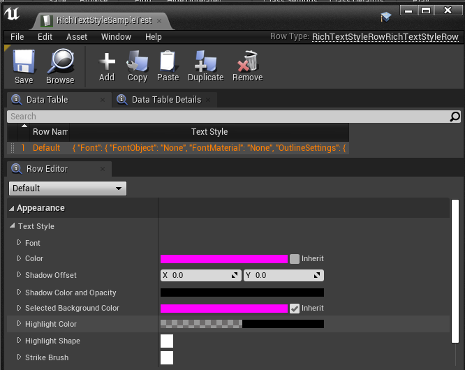

本篇文章用来记录使用UE4的UMG功能时遇到的问题和知识点。逐步了解UMG，UE4中的UI制作。
UMG
首先是对UMG这个概念的解读，Unreal Motion Graphics UI设计 是UE4提供的可以方便展示UI的设计框架，这个框架本质上还是使用Slate搭建的。
提到UMG也还会经常听到HUD这个词，在UE4中的HUD主要是指
- UE3那里继承来的Head-Up Display功能，在UE4中主要是用来Debug
- 向画布上添加图形图元的功能，表示文字的功能，还有简单的HitBox处理，用来检测鼠标等
但是由于这些功能UMG都可以干，所以UE4的HUD功能也不是需要一定要掌握了，HUD自身也有许多比如说执行才能被渲染不执行无法确认，文字表现不尽人意，旧版本的功能稳定性之类的问题。
点线图形之类图元的图形渲染UMG的OnPaint函数也可以实现。
而非常重要的Slate的话题，Slate是不依靠某个平台的UI框架，UE4的Editor和游戏中的UI都是使用Slate构建的。也就是说想要对UE4的Editor进行比较深度的扩展就一定要动Slate才行。但是网上关于Slate的文章有但是不是很多，需要仔细的挖掘和学习总结了。更多Slate的内容我想在ActionRPG那篇文章中记录。
回到UMG的话题，UMG是什么呢，又是为了什么而存在的呢？
UMG说白了就是对Slate进行了扩展方便在游戏中使用的框架
- 首先是继承了UObject使得Blueprint也可以方便使用
- 方便在UE4的Editor上确实渲染结果
- 简单的制作UI动画
Widget
使用UMG的话，应该第一个需要接触的就是Widget这个概念了，而实际上使用UMG的时候，基本上都要跟Widget打交道了。
Widget是UE4提供的部件，可以方便的使用蓝图进行操作，嵌套之类的都支持。
UE4提提供了许多有用的Widget部件，大概像这样
关于不同类型的Widget，我觉得很重要，有一些不知道的话不知道使用就得不偿失了，有时间一定要整理学习。
参考资料
UMG使用的Tips
先来一个邪门的，快速的建立C++和UMG Blueprint中Widget控件的联系
关于上面的邪门的知识，在使用过程中我遇见的坑，就是按照那个规则创建了控件之后蓝图编译总是报错，说是没有这个类型的控件，这个时候解决方案是，C++的那边修改一下变量名然后再编译。
UMG中的一些控件介绍
UMG的RichTextBlock
UE4除了提供了提供了简单的文本显示的控件之外还提供了可以方便自定义格式的RichTextBlock。记录一下使用的方法。
RichTextBlock使用了UE4的DataTable来对其进行自定义和添加样式。使用DataTable，我们可以创建想要的Style和自定义的Decorator类。UE4内置了一个样例Decorator类：RichTextBlockImageDecorator类，可以参考。
想要使用自定义的文本格式之前先创建一个DataTableAsset方便我们使用。在创建DataTable的时候有两种行的结构供我们选择：
- Rich Image Row
- Rich Text Style Row
由名字就可以注意到一个是用来显示图片的一个是用来显示文本的。首先是使用文本的栗子：

可以观察到添加了一个默认行，（当然Default的名字是要自己修改的），作为使用的默认样式。貌似第一行的行名默认就是Default，遵循这个规则。
然后是要把这个格式应用到Widget的RichTextBlock上去。找到自己创建的RichTextBlock 控件，然后找到Appearence设置好我们创建的TextStyle：
这里需要注意的是检查一次字体的格式有没有好好设置，要不然会显示不了文字。
做完上面，我们就简单的获得了一个自定义的雏形。
但是我们想要在一个TextBlock中有多个文字样式，那么就需要在上面我们制作的DataTable中添加新的样式数据并应用它。添加一个新的格式;
然后应用它：
就是<RowName>Text</>的格式，把想要应用的文本包围起来就可以实现了。
关于更多的RichText的使用，还有上面提到的Decorator类的内容，需要找时间整理学习。